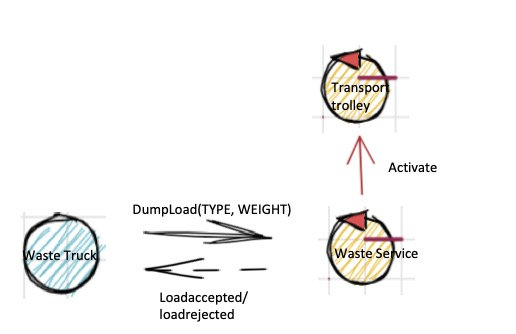
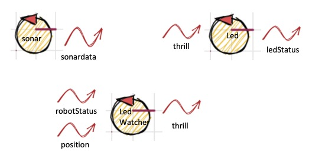
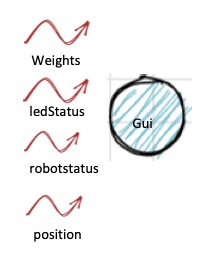

Introduction
Requirements
A company intends to build a WasteService for the separate collection of waste, composed of a set of elements:
a service area (rectangular, flat) that includes:
an INDOOR port, to enter waste material
a PlasticBox container, devoted to store objects made of plastic, upto MAXPB kg of material.
a GlassBox container, devoted to store objects made of glass, upto MAXGB kg of material.
The service area is free from internal obstacles, as shown in the following picture:

a DDR robot working as a transport trolley, that is intially situated in its HOME location. The transport trolley has the form of a square of side length RD.
The transport trolley is used to performa a deposit action that consists in the following phases:
pick up a waste-load from a Waste truck located on the INDOOR
go from the INDOOR to the proper waste container
deposit the waste-load in the container
a Service-manager (an human being) which supervises the state of the service-area by using a WasteServiceStatusGUI.
a Sonar and a Led connected to a RaspnerryPi. The Led is used as a warning devices, according to the following scheme:
the Led is off when the transport trolley is at HOME
the Led blinks while the transport trolley is moving
the Led is on when transport trolley is stopped.
The Sonar is used as an alarm device: when it measures a distance less that a prefixed value DLIMT, the transport trolley must be stopped. It will be resumed when Sonar detects again a distance higher than DLIMT.

TFRequirements
The main goal of the WasteService software is to allow a Waste truck to deposit its load of TruckLoad kg plastic or glass in the proper container.
The global story can be described as follows:
The Waste truck driver approaches the INDOOR and sends (using a smart device) a request to store the load, by specifyng the type of the material (plastic or glass) and its TruckLoad.
The WasteService sends the answer loadaccept if the final content of proper container will not surpass the maximum value allowed (MAXPB or MAXGB). Otherwise, it sends the answer loadrejecetd and the Waste truck leaves the INDOOR area.
When the load is accepted, the transport trolley reaches the INDOOR, picks up the material, goes to the proper container and settles the material. During this activity, the WasteService blinks the Led
When the deposit action is terminated, the transport trolley excutes another deposit command (if any) or returns to its HOME.
The WasteService must create a WasteServiceStatusGUI that shows to the Service-manager:
the current state of the transport trolley and it position in the room
the current weigth of the material stored in the two waste-containers
the current state of the Led
Requirement analysis
Requisiti funzionali¶
Requisiti riguardanti la funzionalità CORE del sistema-
Arrivo waste truck: Un waste truck si reca nella posizione indoor ed invia una richiesta per il deposito di un certo mater materiale (glass or plastic) e il carico che vuole depositare.
-
Accettato: nel caso in cui il carico che si vuole depositare sommato al carico attuale dell'apposito container non ecceda una determinata soglia (PMAX or GMAX), wasteService invia la risposta loadaccepted .
-
Respinto: nel caso in cui il carico che si vuole depositare sommato al carico attuale dell'apposito container ecceda una determinata soglia (PMAX or GMAX), wasteService invia la risposta loadrejected ed il wasteTruck libera l'area di INDOOR .
-
Ritiro: Nel caso in cui la richiesta sia stata accettata, il trolley deve recarsi ad INDOOR per prelevare il carico.
-
Deposito: Il trolley si reca all'apposito container per depositare il carico.
-
Fine deposito: quando il trolley termina il deposito, nel caso in cui ci siano altre richieste accettate, il trolley ripete la fase RITIRO descritta precedentemente, in caso contrario torna alla posizione HOME.
-
Led Off: nel caso in cui il trolley si trovi nella posizione HOME.
-
Led Blinks: mentre il trolley si sta muovendo.
-
Led On: quando il trolley è stoppato.
-
Sonar: nel caso in cui il sonar misuri una distanza minore di DLIMIT, il trolley deve essere stoppato. Verrà riattivato quando il sonar rileverà una distanza maggiore di DLIMIT
-
All'interno della GUI devono essere visibili le seguenti informazioni:
-
Trolley info: stato attuale del trolley e posizione attuale.
-
Peso container: il peso corrente di ciascun container.
-
Led info: stato attuale del led.
Requisiti non funzionali¶
-
Posizione iniziale: il trolley parte dalla posizione HOME.
-
Lunghezza del trolley: il trolley ha lunghezza di lato RD.
-
Proattività: il trolley deve muoversi in modo autonomo fino a compimento del lavoro.
-
Reattività: il committente ha prospettato la possibilità che il trolley sospenda il lavoro in caso di allarmi; in particolare, quando il sonar rileva una distanza minore di DLIMIT
-
Raspberry: il LED ed il SONAR devono essere collegati ad un RaspberryPI
Punti aperti¶
- Momento nella quale incrementare il peso contenuto nei container. Potrebbe essere incrementato sia nel momento in cui una richiesta viene accetata (loadaccepted), sia in seguito alla fase di RITIRO specificata nei requisiti funzionali, sia in seguito alla fase di FINE DEPOSITO.
- Concorrenza dei truck.
- In seguito a loadaccepted, il truck deposita il carico e se ne va immediatamente o aspetta l'arrivo del trolley per scaricare? Nel secondo caso si ha bisogno di notificare il truck quando il carico è stato preso dal trolley?
- Come si vuole realizzata la visualizzazione della posizione corrente del trolley?
- La mappa della stanza viene fornita?
Problem analysis
Core Problem
Il problema principale del progetto consiste nel definire un percorso da un punto iniziale (da HOME nella fase di RITIRO, da INDOOR nella fase di DEPOSITO e da uno dei container in seguito ad un FINE DEPOSITO) fino ad un punto obiettivo e verificare che il trolley segua il percorso prestabilito ed arrivi all'obiettivo prefissato (INDOOR nella fase di RITIRO, ai container nella fase di DEPOSITO ed HOME oppure INDOOR in FINE DEPOSITO).Architettura #1
  I componenti presenti in questa architettura sono:
-
Waste Truck: rappresenta il veicolo che porta la spazzatura e fa la richiesta per poterla depositare (dumpload).
-
Waste Service: rappresenta il componente che tiene traccia dei pesi correnti contenuti nei container ed accetta o rifiuta le richieste da parte dei Waste truck. Quando una richiesta viene accettata, invia un Dispatch al trolley per segnalare la presenza di carico da depositare nei container ed ha la responsabilità di aggiornare i pesi correnti ed invia un evento contenente come informazione i nuovi pesi.
-
Transport trolley: rapprensenta il trolley. Emette due tipi di eventi: il primo, chiamato robotStatus, contiene l'informazione sullo stato attuale del robot che può essere in stato 'stopped' o in stato 'working', il secondo evento, position, rappresenta la posizione corrente del robot. Quando il waste Service comunica al trolley che deve andare a depositare del carico, esso invia una richiesta ad un componente chiamato PathFinder che gli restituisce il percorso per arrivare all'obiettivo.
-
Path Finder: dato un punto di partenza ed un obiettivo, questo componente si occupa di trovare un percorso che congiunga i due punti.
-
Sonar Alarm: si occupa di analizzare gli eventi emessi dal sonar con la distanza percepita e nel caso in cui la distanza sia minore di una certa soglia DLIMIT si occupa di inviare un messaggio di dispatch al trolley per comunicargli di stopparsi. Nel caso in cui la distanza superi DLIMIT si occupa anche di inviare un dispatch comunicando di riprendere l'esecuzione.
-
Sonar: si occupa di emettere eventi con la distanza percepita.
-
Led: esegue accendersi e spegnersi in seguito al contenuto dell'evento thrill.
-
Led Watcher: si occupa di emettere eventi di tipo thrill che permettono di accendere/spegnere il led. Emette l'evento thrill dopo aver analizzato eventi di robotStatus e position per rispettare i requisiti funzionali riguardanti l'accensione del LED.
-
Gui: si occupa di visualizzare le informazioni specificate nei requisiti che riceve tramite evento.
Architettura #2

In questa seconda versione dell'architettura logica non si presuppone che il trolley conosca la sua posizione; quindi, quando il trolley effettua un movimento, emette un evento che viene considerato dal componente chiamato RADAR, che aggiorna la posizione attuale del robot ed emette un evento con tale informazione.
Modello eseguibile
Prima versione del modello qak per mostrare alcune delle funzionalità di base in modo "mock".
Alternative
- Il messaggio di activate illustrato come Dispatch nell'architettura è stato scelto tenendo in considerazione il fatto che si ha un singolo transport trolley. Nel caso ci sia la possibilità di trolley multipli si potrebbe realizzare come un evento ed i trolley potrebbero comunicare tra di loro per scegliere chi debba svolgere il compito attraverso un algoritmo di coordinazione, in modo da avere una maggiore scalabilità nel momento in cui si aggiungano sempre più trolley.
- Si è cercato di realizzare un'architettura dove i componenti non si conoscano uno con l'altro.
Note importanti
- Considerando che non sono presenti ostacoli fissi all'interno del percorso del robot, una volta calcolato un determinato percorso si consiglia di 'salvarlo' in modo da non doverlo ricalcolare ogni volta.
- Disponendo di un mapper e di un path executor si consiglia il loro utilizzo per la realizzazione del path finder.
- Disponendo di basicRobot22 si consiglia il suo utilizzo per la realizzazione del trolley.